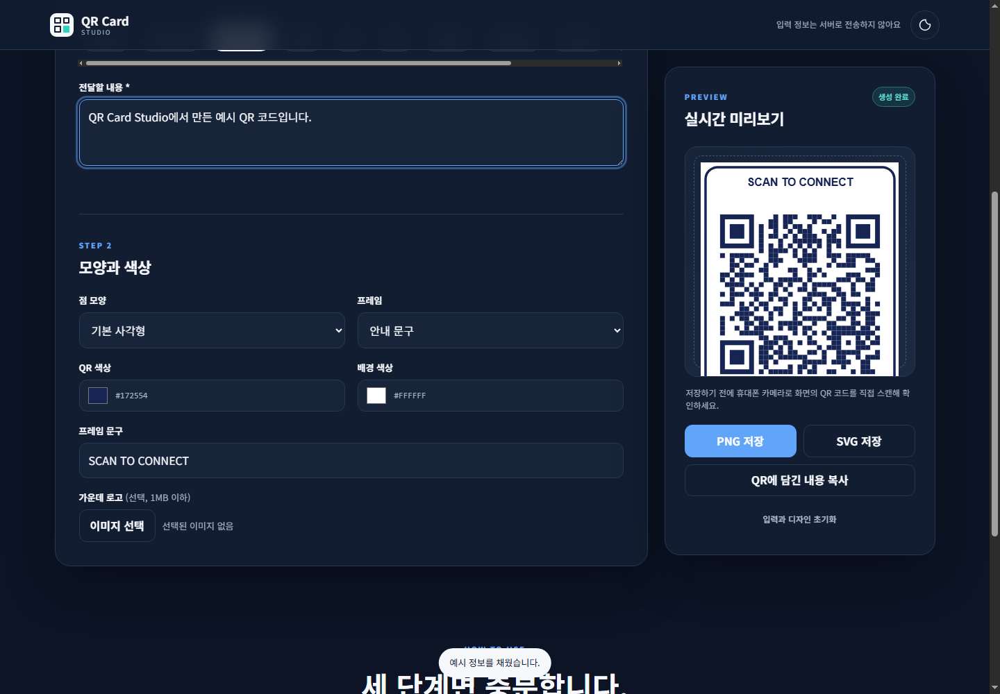
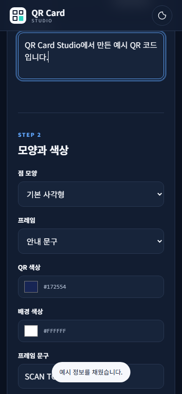

QR 명함 생성기를 만든 이유
처음 만든 QR 생성기에는 웹사이트 주소뿐 아니라 연락처, 문자, Wi-Fi, 카카오톡 링크 등 여러 기능을 넣어 두었습니다.
기능을 늘리는 것만으로는 사용하기 편한 페이지가 되지 않았습니다. 처음 들어온 사람이 무엇을 먼저 입력하고, 어디에서 결과를 확인하고, 어떻게 저장하는지 한눈에 알 수 있어야 했습니다.
그래서 이번에는 기존 내용을 버리지 않고 사용 순서를 다시 정리했습니다. 정보 선택, 디자인 조정, 스캔 확인, 파일 저장의 흐름이 자연스럽게 이어지도록 만든 것이 핵심입니다.
발행 전 확인: 이 도구를 처음 만들게 된 개인적인 계기나 실제 업무 장면을 이곳에 2~3문장 추가하면 글이 더 자연스러워집니다.

QR Card Studio에서 할 수 있는 일
현재 페이지에서는 다음 정보를 QR 코드로 만들 수 있습니다.
- 웹사이트 주소
- 연락처 명함(vCard)
- 일반 텍스트
- 이메일과 문자
- Wi-Fi 접속 정보
- 카카오톡, WhatsApp, YouTube 링크
- 위치 좌표
- 캘린더 일정
- 암호화폐 지갑 주소
색상과 점 모양을 바꾸고, 안내 문구가 있는 프레임을 적용할 수도 있습니다. 가운데에 로고 이미지를 넣은 뒤 PNG 또는 SVG 파일로 저장하는 기능도 넣었습니다.
이 페이지는 별도의 회원가입이 필요하지 않은 정적 웹페이지입니다. 입력한 내용으로 QR 코드를 만드는 작업은 현재 브라우저 안에서 처리되도록 구성했습니다.
다만 연락처와 Wi-Fi 비밀번호처럼 민감한 정보가 담긴 QR 이미지를 공개하면 이미지 자체를 다른 사람이 스캔할 수 있습니다. 페이지가 정보를 서버로 보내지 않는 것과 완성 이미지를 공개해도 안전하다는 것은 다른 문제입니다.

QR 코드 만드는 순서
1. QR에 담을 정보 종류를 선택합니다
화면 위쪽의 웹사이트, 연락처 명함, 일반 텍스트 같은 메뉴에서 필요한 항목을 누릅니다.
명함을 만들 때는 연락처 명함을 선택한 뒤 이름을 입력합니다. 회사명, 직함, 휴대폰, 이메일, 웹사이트, 주소는 필요한 내용만 채우면 됩니다.
웹사이트 주소는 http:// 또는 https://로 시작해야 합니다. 이메일이나 일정처럼 형식 확인이 필요한 항목은 잘못 입력했을 때 화면 아래에 안내가 표시됩니다.
2. QR 모양과 색상을 정합니다
점 모양은 기본 사각형, 둥근 사각형, 원형 점 중에서 고를 수 있습니다.
프레임 없음, 안내 문구, 명함 카드 중 하나를 선택하고 QR 색상과 배경 색상을 바꿀 수 있습니다. 가운데 로고는 선택 사항이며 1MB 이하 이미지를 사용할 수 있습니다.
색상을 꾸밀 때는 QR과 배경의 차이를 충분히 두는 편이 좋습니다. 진한 QR과 밝은 배경처럼 대비가 분명한 조합부터 시험하는 것이 안전합니다.
3. 실시간 미리보기를 확인합니다
필수 정보를 입력하면 오른쪽 미리보기 영역에 QR 코드가 바로 나타납니다. 휴대폰에서는 입력 영역 아래로 내려가면 미리보기가 보입니다.
화면에 QR이 나타났다고 바로 저장하지 않고, 먼저 휴대폰 기본 카메라로 스캔해 보기를 권합니다. 연결 주소, 연락처 이름, 전화번호가 의도한 내용과 같은지 확인해야 합니다.
4. PNG 또는 SVG로 저장합니다
PNG 저장은 블로그, 문서, 안내 이미지처럼 바로 사용하기 편합니다.
SVG 저장은 크기를 키워도 선명하게 유지되는 벡터 파일입니다. 인쇄물이나 다른 디자인 프로그램에서 편집할 때 활용하기 좋습니다.
QR에 담긴 내용 복사 버튼을 누르면 실제로 저장된 문자열도 확인할 수 있습니다. 명함이나 일정처럼 여러 줄로 구성되는 정보는 복사한 내용을 한 번 더 살펴보면 입력 실수를 줄이는 데 도움이 됩니다.
GitHub Pages에 올린 주소
이 페이지는 index.html, style.css, app.js와 QR 생성 라이브러리 파일로 구성되어 있어 별도의 서버 프로그램 없이 GitHub Pages에 올렸습니다.
https://ko9ma7.github.io/qr-card-studio/
GitHub 소스 코드
https://github.com/ko9ma7/qr-card-studio
GitHub 저장소의 Settings에서 Pages를 열고, 발행 원본을 main 브랜치와 /(root)로 지정했습니다. 별도의 서버를 운영하지 않아도 위 주소로 정적 페이지를 열 수 있습니다.
직접 정리하면서 좋아진 점
가장 크게 달라진 부분은 기능을 나열하던 화면에서 작업 순서가 보이는 화면으로 바뀐 점입니다.
입력하지 않은 상태에서는 저장 버튼이 비활성화되고, 필요한 내용을 채우면 생성 완료 상태와 QR 미리보기가 나타납니다. 예시 채우기 버튼도 있어 처음 사용하는 사람이 화면 구성을 시험해 볼 수 있습니다.
모바일에서는 두 칸 입력을 한 칸으로 바꾸고, 긴 메뉴는 화면 전체를 넓히지 않고 메뉴 안에서만 움직이도록 수정했습니다. 밝은 화면과 어두운 화면을 바꿀 수 있고, 키보드로 메뉴를 이동할 때도 현재 선택 상태를 알 수 있도록 구성했습니다.
사용 전 알아둘 불편한 점
이 도구는 로그인이나 저장 기록 기능이 없습니다. 브라우저를 닫으면 입력한 내용을 다시 불러오지 못하므로 중요한 정보는 따로 보관해야 합니다.
휴대폰 기종과 설치된 앱에 따라 연락처, 문자, Wi-Fi, 일정 QR을 처리하는 화면이 다를 수 있습니다. 로고를 크게 넣거나 색상 대비를 낮추면 스캔이 잘되지 않을 수도 있습니다.
암호화폐 지갑 주소처럼 한 글자만 달라도 문제가 생기는 정보는 QR 생성 결과만 믿지 말고 원문과 다시 대조해야 합니다.
누구에게 잘 맞을까
명함에 연락처 QR을 넣고 싶은 분, 매장 Wi-Fi 안내를 만들고 싶은 분, 행사 일정이나 웹페이지 주소를 한 번에 전달하고 싶은 분에게 잘 맞습니다.
반대로 QR 생성 기록을 계정에 저장하거나 여러 사람이 함께 관리해야 한다면 별도의 관리 기능이 있는 서비스를 검토하는 편이 낫습니다.
마무리
이번 QR 명함 생성기는 많은 기능을 넣는 데서 끝내지 않고, 처음 방문한 사람도 순서대로 사용할 수 있는 화면을 만드는 데 초점을 맞췄습니다.
실제로 사용할 때는 정보를 입력하고 디자인을 고른 뒤, 휴대폰 스캔 확인까지 마쳐야 작업이 끝납니다. GitHub Pages 주소로 공개해 두었기 때문에 설치하지 않고 바로 접속해 사용할 수 있습니다.